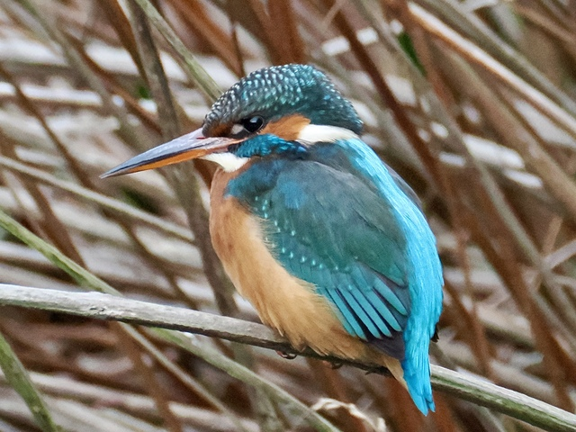
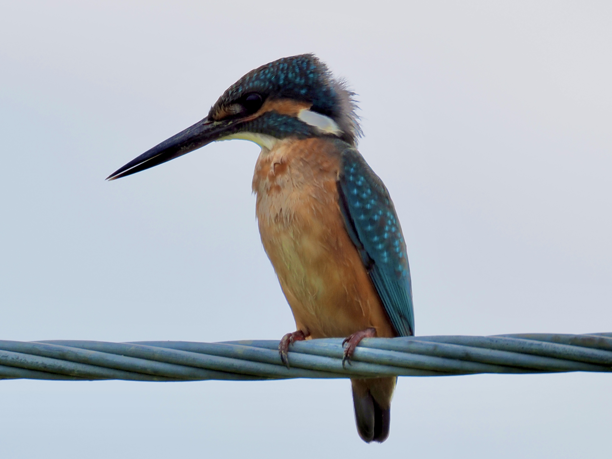

Common Kingfisher
Alcedo atthis
Order: Coraciiformes
Family: Alcedinidae

A small blue and orange bird commonly found near rivers and lakes. Female has an orange lower mandible. Dives to fish, usually seen as a flash of turquoise zooming past the water surface.

Male has an all-black bill.